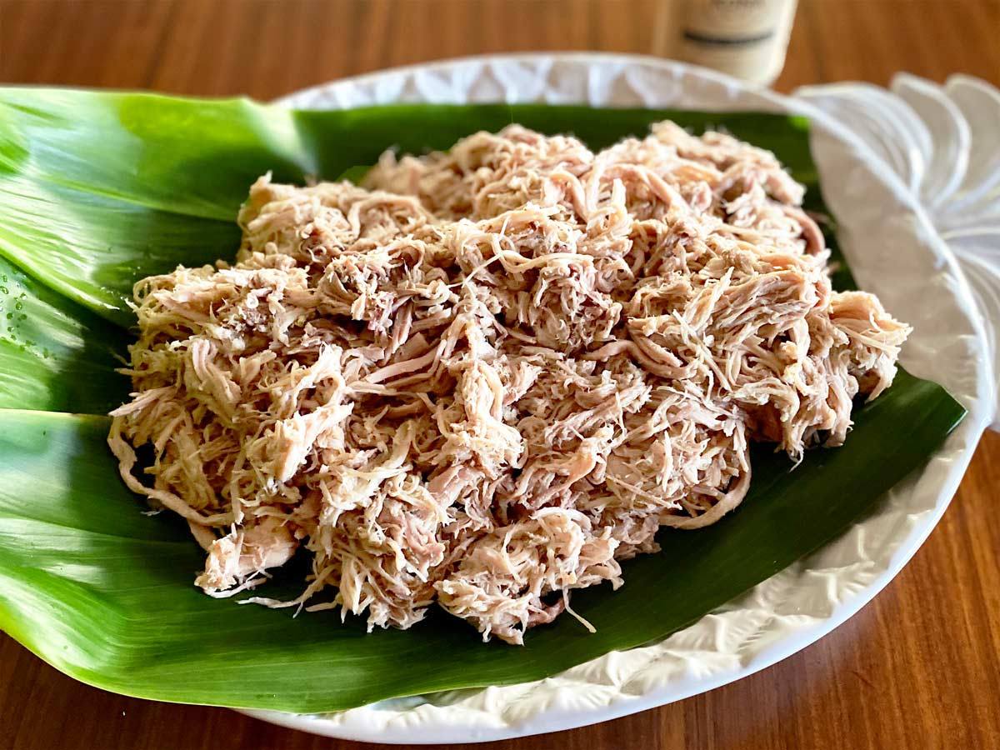

Kalua Pig

Kalua pig is a Hawaiian dish that is traditionally cooked in an underground oven called an imu. But for the purposes of this recipe were going to replicate the succulent pork dish in the oven.
Ingredients
- 4-6 pound pork butt or shoulder
- Hawaiian salt
- liquid smoke
- water
Steps
- Prep
- Rinse the pork butt under cold water and pat dry with paper towels.
- Make slits all over the pork but with a sharp knife.
- Rub the pork butt generously with Hawaiian salt.
- Rub down the pork butt with liquid smoke making sure its evenly coated.
- Cook
- Preheat the oven to 350 degrees.
- Place the pork but into a roasting pan and cover tightly with foil. (Optional: You could wrap the pork butt in banana or ti leaves first but not totally necessary.
- Roast in the oven for about 4 to 5 hours or until the pork is fork tender.
- Check occasionally and add a small amount of water to the pan if it becomes too dry.
- Serve
- Remove from the oven and shred the meat using some forks or your hands.
- Serve hot with poi, lomi salmon and laulau!